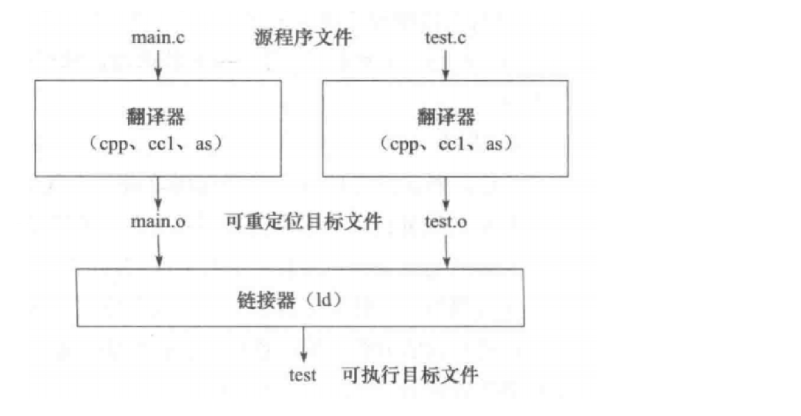

代码组织与程序构建¶
如题，本篇讲义由两个部分组成：
- 项目代码是如何组织的。
- 从源码构建一个可执行程序的原理。
项目代码组织¶
在第零阶段中我们说过，项目中共由两个可执行程序构成：游戏和启动器。我们已经实现了启动器，现在让我们把目光转向项目的核心：游戏。
容易发现，相比于启动器仅有单个源文件，游戏程序对应着多份源代码。 在 OJ 中，大家也许已经习惯了编写单源文件程序，但是对于复杂的项目，这是不现实的。
试想，如果一个源文件中有着数万乃至数十万行代码，会使得阅读和维护代码变得多么麻烦？ 因此，我们需要将代码按照模块分成多个文件。
单源文件程序真的是「单源文件」的吗？
虽然你只编写了一个源代码文件，但编译得到的程序许多功能（如输入/输出，文件读写，系统调用等）并不是在这份源代码中实现的，甚至也不是在你引用的头文件中实现的 （头文件通常不包含具体的实现，我们在后面的部分会详细谈到）。 因此，我们可以说单源文件程序其实并不是一个「单模块」程序，在实际运行时它包含了不少其他模块来实现一些基础功能。
这些模块在哪里？ 又是如何被你编写的程序所使用的？ 读完「可执行文件的构建」部分你将会有所认识。
现在我们来看看项目代码的文件组织。你可以在如下目录下找到游戏的源代码：test/phase1 和 minitui，前者包含了游戏本体，后者则是 minitui 库，本阶段的开发集中于前者。
以 minitui 为例，可以用 tree 命令直观展示其目录结构：
Barisore@litrehinn MINGW64 ~/pspj1/minitui
$ tree
.
├── include
│ ├── ansi.h
│ ├── basics.h
│ ├── debug.h
│ ├── event.h
│ ├── geometry.h
│ ├── minitui.h
│ ├── ui.h
│ ├── widget.h
│ └── widgets
│ ├── canvas.h
│ ├── dummy.h
│ ├── formatter.h
│ └── msgbox.h
└── source
├── minitui
│ ├── event.cpp
│ ├── geometry.cpp
│ ├── init.cpp
│ ├── ui.cpp
│ ├── widget.cpp
│ └── widgets
│ ├── canvas.cpp
│ ├── dummy.cpp
│ └── msgbox.cpp
└── misc
└── debug.cpp
于是你会注意到代码文件分为两类：
.h结尾的头文件（Header File），一般存放在include目录下。.cpp结尾的源文件（Source File），一般存放在source目录下。
你可能会好奇，如何将这样组织起来的众多代码文件构建为一个可执行程序呢？
可执行程序构建¶
推锅声明
为了保证可读性，本部分作了简化处理，很多内容并不严谨。更严谨的内容将会在《计算机系统基础》涉及。
如果你确信有完全错误的内容，请联系助教团队。
难度警示
本部分力图为大家以简洁易懂的方式，循序渐进地描述可执行程序的构建原理。
但个人能力所限和知识点本身属性所致，讲义中部分原理仍然可能比较难以理解，基础薄弱的同学不必追求完全理解，也可以跳过一些相对次要的补充窗格的内容（至于其是否次要，你可以结合上下文判断）。
有些明显属于拓展的外部链接也可以不用看。
导入¶
不是笑话
助教：「我们接下来把这些源代码文件构建为可执行程序……」
同学甲：「什么是代码？」
同学乙：「什么是程序？」
同学丙：「什么是构建？」
真的笑话
同学丁：「什么是文件？」
如果你也想问这个问题，说明你缺乏起码的计算机常识……也许需要重新考虑是否学习计算机专业。
「什么是代码？」¶
在理论课堂上，我们已经知道了「将算法（程序）告诉计算机」的方式——用特定程序语言编写的代码文件。我们还看到了编程语言从机器语言、汇编语言再到高级程序设计语言的演进。
课堂上还介绍说，实践和这一演进过程恰好相反——我们从高级程序设计语言的源文件开始，先得到汇编语言文件，再得到二进制可执行程序文件。这似乎就是所谓「构建」。对于行外人，这么解释已经足够到位了。可对于一个科班学生，如此粗浅的理解起不到多少帮助。
要理解构建，我们必须要问自己一个问题：无论机器语言代码描述的也好，还是高级语言代码描述的也好，所谓程序到底是什么呢？只有对程序的本质有一定认识，才能够理解从源文件构建可执行程序文件的原理。于是我们来到了第二个问题面前。
用语说明
为方便起见，后文有时用「程序」指代描述程序的代码文件。比如「可执行程序」指描述程序的二进制文件，「高级语言程序」指描述程序的高级语言源代码文件，请稍微注意。
「什么是程序？」¶
首先我们先借鉴优秀讲义：开天辟地的篇章（请先好好阅读这一页，除非你读过）。
从这篇文章可以知道的是，计算机是一个状态机，其状态由寄存器和内存来存储，而其转移则由时序逻辑部件定义。
作为一个经由特定设计的「通用状态机」，计算机还可以根据其一部分状态（即内存中的一部分）来模拟另一个可自定义的，或者说可编程的状态机，而程序的本质是对于需要模拟的状态机的定义。
因此，程序也是一个状态机，包括了其初始状态（即数据）和转移（即指令）。 而「在计算机上运行程序」就是让一个状态机模拟一个或者多个状态机串行或者并行的转移。
提示
注意区分指令（Instruction）和代码（Code），代码可能描述指令，也可能描述数据。
关于这两个词有个中文翻译问题，在可执行文件格式中将存储指令的 .text 节/段译作「代码」节/段（笔者觉得这个翻译不好），以至于在中文语境下容易把代码和指令弄混，讲义编写过程中也一度弄混这两个词。
因为这个不太好的翻译，有时需要注意当谈到二进制文件的「代码区」时，「代码」指的一般是指令。
状态机和通用性
状态机的概念在计算机科学的理论与实践中具有至关重要的地位。某种意义上，数逻计组是一门研究设计通用状态机的学问，操作系统是一门研究管理模拟出的各种状态机的学问，而计算理论则是一门研究状态机计算能力的学问，以此类推。
我们说计算机是具有通用性的状态机，是指其可以模拟由程序自定义的状态机，即可编程性。你也许在其他地方听过所谓「可编程」，比如有些比赛规定不可携带「可编程」的计算器。通用/可编程意味着什么呢？在上面提过的计算理论中，通过引入图灵机/图灵完备的概念和一系列逻辑推导，我们可以知道所谓的通用性是指（近似的）图灵完备性。
也许你还不理解什么是图灵完备性，但没有关系，你需要知道的是：在资源（即状态空间足够）的情况下，一个通用的状态机可以模拟另一个通用的状态机。这意味着，只需要以资源为代价，我们可以在一个状态机上抽象出一个或多个新的状态机。
这也是计算机系统能够层层抽象的原理：在一切的开始，用门电路打造最基本的，能够被机器语言编程的通用状态机。再设计操作系统，用虚拟化和持久化的方式来提供我们认知之中能够加载/管理/执行程序，调配资源的计算机。在此之上结合编译器、解释器打造一个能够被高级语言编程的计算机，还有一系列强大的应用程序（浏览器、Shell），乃至于借助 AI 的力量，也许定义一个纯粹使用自然语言的状态系统也不再不可能。
除了这个标准技术路径，我们还可以藉由这一性质实现有意思的技术或者玩具：
- 用一台计算机模拟另一台虚拟的计算机乃至一个虚拟计算机集群（虚拟机）。
- 制造可通过软件编程的逻辑门阵列（FPGA），以便低成本地进行集成电路设计和实验。
- 在《我的世界》（一个开放沙盒游戏）中用红石模拟数字电路乃至计算机。
- ……
经由一层层的抽象和模拟，原先结构简单，功能孱弱，使用不便的通用状态机变成了结构庞杂，功能强大，使用便捷的系统。我们看到，只是结合「抽象」这一核心计算思维和「图灵完备」这一重要性质，源自沙子，看起来毫无作用的超大规模集成电路就能够赋予我们改变世界的伟力。
图灵完备的性质和抽象的范式已经渗透到了计算机世界乃至真实世界的方方面面，同学们在未来的学习中一定会更深入的体会到，并为计算机科学的魅力所折服。
语言和状态机
你已经学过理论中的对应内容，现在再回头想一想，高级语言为什么能够通用地描述一个「状态机」？这个通用性和状态机的通用性有没有关系？也许你可以在修读完计算理论课程之后再思考一次这个问题。
反过来，为什么计算机可以接受任何合法的高级语言串来解析出一个状态机？这个通用性又和状态机的通用性有何关系？再进一步地，自然语言是否也有类似的性质？自然语言能否被一个状态机解析？（NLP：？）
别被我误导了，我问有没有关系，答案不一定是有关系（狗头）。
「什么是构建？」¶
回归正题。我们上面提到，作为状态机，程序的转移和初始状态分别对应了指令和数据。这两个重要成分都保存在负责“模拟”其运行的计算机的内存中（我们把用这种方式运行程序的计算机称为冯·诺依曼结构计算机）。
无论是二进制文件也好，源代码文本文件也好，都是对这两个组分的描述。
- 二进制文件最直接地用数据结构（如 ELF/PE 等，见后文，但本文不欲描述这些数据结构的细节）描述了这两个组分在计算机内存中的具体布局（即所谓存储器映像）。计算机可以在加载之后执行它。
- 高级语言源代码用函数和全局变量描述这两个组分。计算机不能直接执行。
构建可执行程序就是要把高级语言代码描述的代码和数据翻译到二进制文件之中。
然而我们上面提到，在实践中，一个程序可能对应了很多源文件。在具体构建中，这些源文件是先被合并，再统一翻译为二进制，还是在每份源代码翻译为二进制之后合并呢？在读完下面的部分后，你将会知道这个问题的答案。
「不需要构建」的高级语言
不是所有高级语言程序都需要被翻译为二进制程序。C/C++ 这种需要将其源代码翻译为二进制程序再执行的高级语言称为「编译型」语言。其源代码不需要构建可以直接依靠解释器运行的语言称为「解释型」语言。
我们在「状态机和通用性」窗格中提到，一个通用状态机可以模拟另一个通用状态机。因此，我们可以直接模拟一个可以直接以高级语言作为其「机器语言」的状态机。实现这一模拟的状态机（程序），就是所谓解释器。
Python、Bash 等语言都是解释型语言。解释型语言的优势在于：在实现不同的不同计算机平台（即机器语言不同）之间迁移时，只需要保证目标平台的解释器存在，而不需要重新构建（相当于通过解释器虚拟了一个标准统一的计算机）。并且，解释性语言因为不需要构建而具有天然的动态性，可以即时交互，热更新代码等（虽然编译型语言通过技巧也能做到，如 jyy minilab 4）。其劣势也很明显：耗费资源多，不易优化。
Java 是一个居于两类之间的高级语言，它具有编译器，但编译器产生的二进制代码不对应于任何一种机器语言，而是需要 Java 虚拟机（JVM）解释执行的字节码。
关于解释型/编译型语言的更多信息，大家可以自行上网搜索了解，这里不多赘言。
最后需要提及的一点是，上述语言的类型事实上是语言翻译程序的实现类型，而非语言本身的类型。就语言本身而言，Python 未必不能编译执行，C++ 未必不能解释执行，只不过是它们翻译程序的实现不采用罢了。
说明
下面仅描述 C/C++ 语言源代码的构建流程。
头文件和 #include¶
在一切开始之前，也许你会想问：头文件到底是什么，你怎么从来没提过？
事实上，头文件只是一些经常被重复使用的代码片段的封装文件，它在实际编译之前被 #include 预编译命令引入到源文件中，以便复用其中的代码，而实际参与后续构建的只有这样预编译后的源文件。
下面我们详细介绍一下头文件和预编译命令 #include。
头文件¶
你每次编写的代码的第一行都有可能是 #include <cstdio> 或 #include <iostream> 乃至 #include <bits/stdc++.h>。
这些尖括号内的文件就是标准库为我们提供的头文件。
头文件的作用是提供变量的 extern 声明和函数声明（这些声明的具体作用我们后面讨论），它一般通过 #include 命令而被引入到程序中（这种引入就是文本替换，并可以递归）。
#include¶
#include 这种以 # 起始的命令叫做预编译命令。
处理预编译命令是 C/C++ 源文件编译流程的第一步，我们在此后还会遇见其它的预编译命令，它们同样具有重要作用。
观察 #include 命令的作用和预编译过程
你可以写一个简单的 Hello World 程序（hello.cpp），并使用如下命令指示编译器进行预编译：
g++ -E hello.cpp -o hello_pre.cpp
观察 hello_pre.cpp，你发现了什么？
#include <...> 搜索路径¶
在引用头文件如 cstdio.h 时，我们发现头文件既不在代码文件对应的目录下，也不在 PATH 环境变量所指定的路径下，GCC 到底是从哪里找到这个文件的呢？
如果你使用带语法提示的编辑器或 IDE，那么在没有预先配置的情形下你可能会发现项目代码中引用诸如 ansi.h 或 basics.h 时会被标红线，提示找不到该文件，但编译却可以通过，这是为什么呢？
这些都和 #include<$FILE> 时编译器的搜索路径有关。
在这一格式的命令中，编译器会从标准库 include 路径下寻找对应的文件，然后从用户指定的 include 路径中寻找文件。如果你执行 echo | gcc -xc++ -E -v - 命令，你将会看到：
#include <...> search starts here:
/usr/lib/gcc/x86_64-pc-msys/11.3.0/include/c++
/usr/lib/gcc/x86_64-pc-msys/11.3.0/include/c++/x86_64-pc-msys
/usr/lib/gcc/x86_64-pc-msys/11.3.0/include/c++/backward
/usr/lib/gcc/x86_64-pc-msys/11.3.0/include
/usr/lib/gcc/x86_64-pc-msys/11.3.0/include-fixed
/usr/include
/usr/lib/gcc/x86_64-pc-msys/11.3.0/../../../../lib/../include/w32api
要想增加 #include<> 的搜索路径，可以使用 GCC 提供的 -I 选项。
试试执行 echo | gcc -xc++ -E -v -I . -，输出结果出现了什么不同？
在本项目中，我们会在编译前加上 -I minitui/include -I test/phase1/include （通过 Make，其用法见下一篇讲义）
可执行程序构建流程¶
提醒
在本文中，我们不讨论任何具体文件格式的数据结构规约，也不讨论具体的构建实现细节。 相对地，我们专注于描述构建流程中各个实体的组成部分及其演变过程，以为构建流程提供一个直观理解。
解决了头文件的问题以后，我们正式开始介绍可执行程序的构建流程。
该构建流程大体可分为预处理、编译、汇编、链接四个步骤，前三步是每份源代码独立经历的。 构建只针对源文件而不直接针对头文件。
- 预处理
cpp：在这一步，源文件所有的#预编译命令都被展开。头文件在此步被引入。 - 编译
ccl：在这一步，预处理后的源文件被分别编译成汇编代码文件。 - 汇编
as：在这一步，汇编代码文件被分别编译为可重定位目标文件（.o文件），在 Windows 平台上，它是 COFF 格式，在 Linux 平台上，它是 ELF 格式。 - 链接
ld：在这一步，多个可重定位目标文件被链接成一个完整的可执行文件，在 Windows 平台上，它是 PE 格式，即常见的 exe 程序，在 Linux 平台上，它仍是 ELF 格式。
上述流程可以被表示为：

error: ld returned 1 exit status
你也许曾在没有关闭程序而尝试重新构建它时遇到过这个报错，现在你能理解这则错误信息了吗？
GCC 提供了精细控制构建流程的选项，展示如下：
-E Preprocess only; do not compile, assemble or link.
-S Compile only; do not assemble or link.
-c Compile and assemble, but do not link.
我们不是很关心预处理、编译所得到的中间产物。（但你可以各自执行一遍试试！） 为方便起见，我们把预处理、编译、汇编三步（图上显示的「翻译器」过程）统称为编译，即把一个源代码文件翻译成一个目标文件（二进制）的过程。
如上述，在实践中，编译过程可以直接通过 gcc -c 实现，例如：
gcc -c a.c -o a.o
模块化构建¶
就其目的和形式而言，多源文件编程是一种模块化编程，其中程序被分成若干有一定独立性却又通过特定接口进行交互的一个个模块。 一个模块有对应的源代码文件（C/C++ 源代码）和目标文件（二进制，ELF/COFF）。
模块是程序的一部分，因此也由指令和数据构成。与可执行文件一样，目标文件是描述这些指令和数据的一个数据结构。相对地，模块源文件使用函数和全局变量来对应模块指令和数据。
为什么不用 #include 把所有模块的实现在预处理阶段整合到一个头文件中？
这在设计上不是不可以。但模块分离编译有其特别的优势在，我们在后面会详细谈及。
按惯例，一般不在某一模块对应的头文件中包含其具体实现，而仅定义和该模块接口的交互方式和一些常用的宏（关于模块接口的实现以及如何定义这种交互方式，后面会详细谈到）。
模块分离编译模式下的闭源/开源
因为模块编译过程是互相独立的，因此模块作者可以只提供模块的目标文件和头文件。
我们把这种不公布源代码的模块叫做闭源模块，反之称作开源模块。
接下来，我们围绕编译和链接详细谈谈这种模块化构建的原理。
目标文件编译与模块接口¶
在这里我们不谈论将模块源代码编译成目标文件的具体方法，也不赘述目标文件的结构细节，需要明确的只是上文提及的一点： 目标文件（ELF/COFF）由模块的指令和数据构成，这些指令和数据在运行时处于计算机的内存之中，但是由于模块编译的独立性，在被其链接以前，其所含指令数据在内存中最终所处的位置/地址是不确定的。
然而，模块的运作不是完全相互独立的： 一个模块可能需要用到别的模块的全局变量或函数（即代码/数据），也可能需要提供变量和函数供其他模块使用（这又称应用二进制接口（ABI））。 由于各模块不知道其他模块接口在内存中的相对位置/地址，要做到这两件事是十分困难的。
为了解决这个问题，编译器必须在编译目标文件时，留下这个模块提供的接口信息，以使链接器在构建最终的可执行程序时能够正确改写各模块，从而令模块间能够正常交互。
为什么编译器不能产生最终的模块代码而需要链接器在链接时改写各模块？
请自己思考一下，确认是否理解了到此为止的讲义内容——如果你理解了，答案是很明显的。
二进制接口设计：符号¶
为了解决模块间的互相引用问题，在实践中，我们在目标文件中添加符号表与重定位节作为提供给链接器的额外接口信息。 其中符号指的是全局变量/函数的名称，重定位节用于存放目标文件中所有引用到外部符号的位置。
这个设计的原理是：
- 当我们通过名称引用一个特定函数/变量（下称符号）时，如果引用的是一个外部符号，编译器并不知道其在最终可执行文件中的确切地址，因此它只能将此符号作为弱符号放入目标文件的符号表中，并将目标文件引用符号的位置放入重定位节，以通知链接器在安排模块内存排布后，确定所有符号的确切地址之后改写重定位节指示的部分。
- 当我们需要将一个特定符号提供给其他模块使用时，我们首先在模块源代码中定义（全局变量或函数实现）该符号，而编译器则会将该符号作为一个强符号放入符号表中，来通知链接器某一符号的定义在本模块中，以便其在安排好每个模块的内存排布后，确定每个符号的最终地址。
加入了这个设计以后，我们可以把上面解决的问题称作跨模块符号引用，把编译器生成的带有符号表和重定位节的目标文件称作可重定位目标文件，把链接器改写目标文件的过程称作重定位。可以看到，有了跨模块符号引用机制，模块就可以向外提供二进制接口了。
高级语言中的二进制接口：声明¶
但是，编译器并不会无脑把所有没有在本模块中定义的符号都当作可能的外部符号/接口。它要求所有符号/接口在使用前都事先声明。
这是因为，为了将符号引用翻译成机器语言，编译器需要声明来知道一个符号的引用方法（符号是函数还是变量，是什么类型，有哪些参数）？而从模块接口的角度看，声明还为高级语言定义了二进制接口的交互方式。
具体来说，声明包括名称（函数或变量名），类型（变量类型或函数原型），性质（静态/全局）（例子见补充窗格）。
声明意味着定义一个弱符号，一个程序可以在多个模块中同时存在多个同名弱符号，不过一个模块内不可以包含互相冲突的同名声明。这种安排是因为不同模块可以按照不同方式解读一个相同的符号（地址），或者说按不同方式和一个相同接口交互，但每个模块中这种方式必须是一贯的。
定义意味着实现一个强符号，一个程序中至多存在一个同名强符号，强符号决定了符号背后的地址，也决定了这一地址指向的内容，还对应了模块接口的具体实现。
事实上，头文件最重要的功能——提供模块的所有接口交互方式，就是通过包含了其模块提供的接口的所有符号声明实现的。接下来我们会在补充窗格中详细提及。
符号的许多解读
上文的叙述提供了很多看待符号的可选角度，这里来总结一下。
从最原始的意义来看，符号是一个函数/变量名称。
从其在模块编程的作用来看，符号是模块的二进制接口。
从运行时实体来看，符号背后对应一个地址。
声明/实现的例子
这是一个函数的声明：
int fun(char *s, int n);
char * 参数和一个 int 参数，并具有一个 int 返回值。
这是一个函数的实现：
int fun(char *s, int n) {
while ((n--) && *s++) ;
return n;
}
A 和函数 B 相互调用，那么先实现的函数就必须在后实现的函数之前引用后者。
这时可以借助声明来提前告知编译器函数的调用方法：
void B(int); // 函数 B 的声明
void A(int ttl) {
if (ttl < 0) return ;
putchar('(');
B(ttl - 1);
putchar(')');
}
void B(int ttl) {
if (ttl < 0) return ;
putchar('[');
A(ttl - 1);
putchar(']');
}
这是一个全局变量的声明：
extern long long v;
extern 关键字表示这是一个声明而非一个定义。
注意，这是一个全局变量的定义：
static long long v = 500;
回顾头文件：接口声明的集合
上面谈到，一个模块可能实现了若干它希望被其他模块使用的函数和变量，我们把它们称作接口。当其他模块需要使用接口时，需要提供接口的声明。比如，stdio 模块实现了函数 puts，那么其他模块使用该函数时，就需要写上 puts 的声明，即 int puts(const char *)：
int puts(const char *);
int main() {
puts("Hello, world!");
}
这样，编译器就会将 puts 视为一个外部符号，并要求链接器在重定位时再将其改为具体的符号引用。
但是对于模块的使用者而言，逐个写出需要使用的模块符号声明显然不现实：不仅麻烦，而且使用者可能根本不知道符号的具体声明（如果模块编写者不公布源代码又没有对应的文档）。因此，模块编写者将所有接口的声明都写入一个头文件，并且公布出来供使用模块的人直接通过 #include 方式包含进其源代码。
对于 stdio 模块，对应其接口声明的头文件就是 stdio.h（C）或 cstdio（C++），里面包含了所有 stdio 接口的声明，puts 自然也在其中。于是，我们可以修改上文看到的 Hello World 程序：
#include <stdio.h>
int main() {
puts("Hello, world!");
}
这就是我们所常见的 Hello World 程序的形式了。经由上述内容，我们写代码必带的头文件总算解开了其神秘的面纱：它是对应模块接口声明的集合。
C++ 真的完全兼容 C 吗？
如果你不懂宏，不必焦虑，直接看这部分内容即可，不影响理解。
在 stdio.h 开头能看到一个宏 __BEGIN_DECLS，如果 include 它的是 C++ 源代码，它会被拓展为 extern "C"，如下所示：
// C++ needs to know that types and declarations are C, not C++.
#ifdef __cplusplus
# define __BEGIN_DECLS extern "C" {
# define __END_DECLS }
#else
# define __BEGIN_DECLS
# define __END_DECLS
#endif
这里 extern "C" 告诉 C++ 需要以 C 的 ABI 格式来对待其内的声明。你没看错，同样的声明在 C 和 C++ 定义的接口交互方式其实是不同的！
C++ 为了支持函数重载，导致其导出函数的符号名的格式与 C 不同（其会加上函数的参数列表中的所有类型作为后缀，以防止参数列表不同的函数发生重名冲突。）
因此，C/C++ 因为 ABI 格式不同导致 C++ 模块源文件不能直接使用未经过任何处理的 C 模块头文件。这就在引用外部模块的情形下破坏了 C++ 对 C 的完全兼容性。
当然，我们可以发现大部分 C 模块头文件会在识别到编译器是 C++ 时主动添加 extern "C" 来使自己可以兼容于 C++ 模块。
关于 extern "C" 的更多讨论详见这个知乎专栏。
链接与总结¶
在将每个模块的源文件编译成可重定位目标文件之后，我们终于来到了链接环节。
按照上述逻辑，链接器只需要将各个可重定位目标文件中的指令和数据合并后，安排好最终程序的存储器映像（还记得这个概念吗？）结构之后，对每个目标文件进行重定位。
最后，获得最终的存储器映像以后，链接器将其以特定数据结构（ELF/PE）写入二进制文件中，可执行程序的构建就完成了。
实践中，可以直接使用 GCC 不加任何参数进行多个可重定位目标文件的链接（事实上，在不加任何参数时，GCC 会尝试将给它的所有文件编译到目标文件（如需要）后进行链接），比如：
gcc a.o b.o c.o -o exp
一些工程实践上的细节
尽管我们说过我们不会谈及工程细节，但在这里还是忍不住指出，在目标文件中，文件被分为若干节（section）以代表目标文件中的不同部分。而在可执行程序中，它们存在的形式是段（segment）。
于是，上段的过程可以描述链接器把各个目标文件的节合并形成可执行程序中的段。节、段有一定对应关系（如代码节对应代码段，数据节对应数据段等），但也有不同。相比于节只描述目标文件一个特定部分的内容，段还代表了其对应的内存区域及读/写/执行权限。
经历漫漫征途，我们终于从源代码构建出了可执行程序！也许这个时候我们稍稍回顾一下那些前文埋下伏笔，但还没有被解决的问题。
库函数到底在哪实现？¶
在本篇讲义开始，我们抛出了问题：单源文件程序真的是「单源文件」的吗？在这个问题中，我们关注的是，程序引用的一些「库函数」模块，比如 stdio，stdlib，到底是在哪里实现的？
在我们了解了程序构建流程以后，一个直觉的想法是：在 GCC 链接目标文件时，默认将 printf.o，scanf.o 等提前编译好的标准库模块加入了链接列表。
但这样似乎有点荒谬：哪怕我写个 hello world，你都要把整个标准库链接进来？犯不着吧。这样无形中浪费了大量的内存和存储空间资源，似乎不太合理（Electron：你再说一遍？）。
为了解决这个问题，我们可以将标准库（或任何包含大量选择性使用的模块的库）打包为一个 .a 文件（静态库），比如：
ar rcs libdemo.a a.o b.o
假设我们把 libdemo.a 放在 $LIB 目录，那么如果我们要将一个 exp.c 文件编译后和这个静态库链接，可以使用命令：
gcc exp.c -L $LIB -l demo -o a.o b.o -o exp.o
到此为止，我们的链接都是在可执行程序最终生成以前进行的，程序所有需要使用到的模块都会存在于可执行程序之中，我们把这种链接方式称为静态链接。
然而，静态链接也存在资源浪费问题：计算机中可能有许多使用了标准库模块的程序。例如，假设有 100 个程序需要使用 printf，那么 printf 模块的指令和数据就会在硬盘中存在 100 份！
为了解决这个问题，人们引入了动态链接的技术，将一些常用的库（如标准库）由静态库变为共享库（Linux 中的 .so，Windows 中的 .dll），或称动态库。
在生成依赖这些库的可执行程序时，先不链接这些共享库，而是仅仅在可执行程序中记下依赖的动态库信息（.dynamic）。
在程序加载时，再去动态地链接共享的模块。这样就使得磁盘上可以仅存在一份共享库文件。同时，借助写时复制技术，还可以使得内存中也仅存在尽量少的共享库的副本。
更进一步地，共享库的重定位还可以进一步推迟到实际调用其接口时（延迟绑定）。
实践中，用 ldd 命令可以查看一个可执行程序依赖的共享库：
$ ldd exp
linux-vdso.so.1 (0x00007ffe4fba6000)
libc.so.6 => /lib/x86_64-linux-gnu/libc.so.6 (0x00007f4010aa1000)
/lib64/ld-linux-x86-64.so.2 (0x00007f4010cf3000)
其中，libc.so.6 是 C 共享库。其它两个（不需了解）分别是 linux-vdso.so.1 内核模块，/lib64/ld-linux-x86-64.so.2 动态链接器模块。
欲了解更多有关于动态链接的知识，可以移步jyy 的讲义（B 站有讲解视频）。
为什么采用模块化构建？¶
有了全部这些知识以后，现在我们再来回答之前抛出的一个问题：为什么通过链接来合并模块，而非直接合并模块的源代码一次性编译？
- 节约构建时间。如果合并源码编译，那么每进行一次修改，就要重新完整编译一次项目（甚至连着标准库的源码一起）。如果每个模块分别编译可以只重新编译改变了的模块，并重新进行链接。
- 允许闭源提供模块。有些商业公司并不希望你在使用他们开发的模块时得到他们的高级语言源码，直接提供二进制模块文件可以避免这一点。
- 方便动态链接。如果编译前就需要知道所有模块的源代码，那么无法进行动态链接，相同模块的二进制代码无法在运行时复用。
实战环节¶
纸上得来终觉浅，绝知此事要躬行。
接下来，我们通过一个实战例子来巩固上面学习的理论，同时实际使用一下 GCC 套件来进行编译和链接。
// 一个浮点数变量定义
float a = 3.14;
// 一个整数变量定义
// 奇怪但有用的初始值
long long b = (0x310fll) << 50;
#include <stdio.h>
extern int a;
int main() {
printf("0x%08x\n", a);
}
#include <stdio.h>
extern double b;
int main() {
printf("%lf\n", b);
}
现在我们有如上三个 C 源代码文件，我们首先关心如何将这些源文件编译为目标文件。
我们选择使用 make 来自动编译，即执行 make + 目标文件列表。
make 内置了一些常见文件的生成规则，这里请注意观察 make 的自动命令回显：
$ make a.o b.o c.o
cc -c -o a.o a.c
cc -c -o b.o b.c
cc -c -o c.o c.c
接下来我们链接 a.o 与 b.o 生成可执行文件 exp，并将其执行：
$ gcc a.o b.o -o exp; ./exp
0x4048f5c3
a.o 模块定义的浮点数变量 a 在 b.o 模块中被作为一个整数变量解释。
反之同理，我们链接 a.o 与 c.o：
$ gcc a.o c.o -o exp; ./exp
-516508834063867445248.000000
如果我们同时链接这三个目标文件，则会遇到一个报错：
$ gcc a.o b.o c.o
/bin/ld: c.o: in function `main':
c.c:(.text+0x0): multiple definition of `main'; b.o:b.c:(.text+0x0): first defined here
collect2: error: ld returned 1 exit status
仔细读读这条报错信息，你知道它是为什么产生的吗？
答案：这是因为链接器 ld 遇到了超过一个同名强符号，它们互相冲突而产生了错误。
手动构建项目
之前我们说过可以通过 make -n 来查看项目构建时 make 运行的命令。
假设 make 不存在，你应该如何构建整个项目呢？既然你已经了解了项目构建的流程了，不妨动手试试看。
手动构建项目虽然操作起来很蠢，但作为练习可以大大加深你对构建流程的理解。
思考题¶
- 假设现欲添加一个名为
glob_value的int类型全局变量，并要求源代码通过包含一个头文件glob_value.h就可以访问该变量，glob_value.h里应该如何写？源代码应该作何修改（可以添加新文件）？